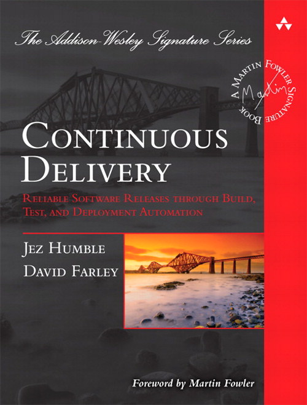
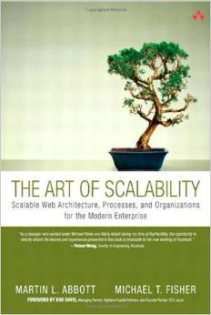

Why do we produce software?
- To satisfy a need.
- To make MONEY!
The software crisis
- Occurred between 1960’s and 1990’.
-
Symptoms
- Late delivery or never delivered.
- Over budget.
- Product does not meet specified requirements.
- Product was very inefficient or had low quality.
- Project was unmanageable.
- Owning and maintaining software was twice as expensive as developing it.
- Inadequate documentation.
- Things mentioned above still happen!
Observations and conclusions
- Tools like CASE tools, programming techniques, languages and standards were touted as silver bullets.
- Lack of discipline of programmers.
- Lack of a formal process or methodologies.
- No code of ethics or professionalism.
The Agile Software Development
- Born with the rise of the Internet in the 90’s.
- Initiate the Lightweight Methodologies momentum.
-
Agile Manifest:
- Individuals and interactions over processes and tools.
- Working software over comprehensive documentation.
- Customer collaboration over contract negotiation.
- Responding to change over following a plan.
The Agile Utopia
- Why Utopia?
Agile Teams Problems
- Most people in a team start with zero knowledge of agile: They guess how to do it.
- Non flexible processes.
- Overly specialized professionals.
- Command and Control managers.
- Estimation? What?
- Feedback is not always gathered.
- Prefer big numbers instead of small achievements.
Conclusion: Problems we have are not Agile problems after all, they are organizational problems.
- Traditional organizations tend to work as isolated islands or silos of specialists.
- Communication is restricted between the team and the customer and sometimes between teams.
- To many repetitive manual tasks which are also error prone.
- Few or almost no tests.
- No early feedback from the customers.
- Long etc…
DevOps
How did get started?
- The term became popular through a series of conferences called “DevOps Days“ starting in 2009 in Belgium.
- A portmanteau of "development" and "operations ".
Main reason
- Business owners needed to wait long time before the product gets to their clients and produce ROI.
Causes: The development team works fast, but...
- Operations needs to transform bunch of stuff before the artifacts sent by dev can be deployed.
- Operations deploy the product in a platform completely different from the one used by development. (Works on my machine problems)
- Operations need to decrypt configuration files.
- Production servers may crash, ops can’t deploy until they are really sure it will not crash.
Conclusion: Agile improves the software development process… BUT IT HAS FORGOTTEN OPERATIONS!
A Cultural Change!
- DevOps model is about implementing a change in the organization by introducing one or more seeds.
- Seeds are people with proved technical skills AND leadership skills.
- Seeds will lead the change by implementing process patterns, collaborative team practices and will enhance the life style of the team.
- Along with all that, seeds will ensure the team release fast and the business generates early ROI for the client or for the organization.
Agile Roles v. DevOps?
- DevOps seeds may or may not be members of the team.
- DevOps manages the BOILERPLATE of the Agile techniques.
- DevOps seeds know the tools to transform Agile techniques in tangible artifacts.
Stadium San Siro - Milan, Italia
Construction phase - Platform
Construction phase - Platform 2
"We are the biggest startup on the planet."
DevOps Core Concepts
The Three Ways
- The First Way: Systems Thinking.
- The Second Way: Amplify Feedback Loops.
- The Third Way: Culture of Continual Experimentation and Learning.
The First Way: Systems Thinking

Second Way: Amplify Feedback Loops
The Third Way: Culture of Continual Experimentation and Learning
Methodologies and patterns
-
Methodologies:
- Kanban.
- Lean StartUp.
- 12 Factor App.
-
Patterns:
- Continuous Delivery.
- Continuous Deployment.
- Just-In-Time Scalability.
Deployment Pipeline
Continuous Delivery Pipeline
| Continuous Integration | Continuous Delivery |
 |
 |
Tools
- Virtualization/Software Containers (i.e.: Xen, Docker)
-
Deployment Automation: Cluster Immune System
- System Configuration Frameworks (i.e. Chef, Ansible, Puppet)
- Version Control System customization. (i.e.: Git hooks)
- Continuous Testing (i.e.: Restassured, Selenium)
- Continuous Monitoring (i.e.: Nagios, Papertrail, New Relic)
- Extended Continuous Integration (i.e.: Jenkins, Rundeck, Bamboo)
| The Art of Scalability | Scalability Rules | |
|  |
Must read
| The Phoenix Project | CD and DevOps: A quick guide. |